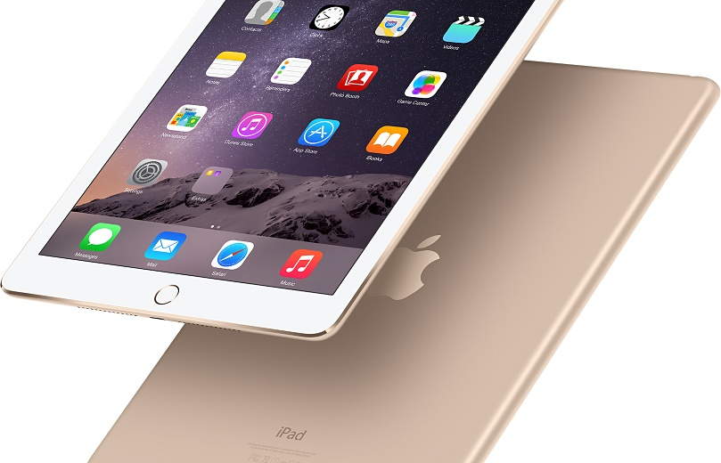
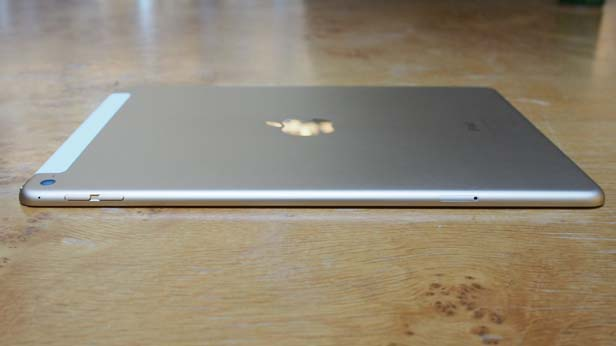

iPad 2 - Review
When you've got a tablet as impressive as the iPad Air, then creating a lust-worthy sequel is no mean feat. The iPad Air was a great tablet for a number of reasons: the design was slimmer, felt nicer in the hand thanks to the "ceramic" feel, and it was the lightest full-fat iPad by far. On top of that you had the clear and crisp screen and up to 128GB of space on the slate - so how can you improve on that? I found that to be an almost perfect tablet, and a year on I'm still happily using one with no hint of a problem.
Design
Apple seems to have run out of ideas slightly with the new model, at least on the outside. The design of the new iPad Air is slimmer - 18% thinner at 6.1mm - and polishes things up a little bit in other areas. For instance, it's lighter than ever before at 437g, and the edges feel different in the hand thanks to a slightly more angular design. They're definitely more chamfered, and the effect enhances the premium feel and nudges it back towards the industrial design of the iPhone 4, 4S, 5 and 5S. The mute switch has disappeared, which is something of a surprise - at the very least, this was a quick and handy way to ensure you wouldn't be get email beeps throughout the night. Given the volume switches remain, it seems that the design could have accommodated such a thing (I could have easily understood Apple putting the volume all on screen to save space - I would have hated it, but it would have made a modicum of sense) it seems weird to have dropped this. While in design terms, it does feel like this is an update for the sake of an update, the iPad Air 2 is still one of the nicest tablets to hold in your hand. Its smooth back, light weight and excellent balance are all a touch better than the previous model, and although it's going to be chucked in a case by everyone who panics over their precious new toy, the thinner dimensions are perceptible. The screen is something to talk about now. Apple made a big deal on stage about the amount of air between each component behind the screen (i.e. none) and the lack of reflection. It really shows. Compared side by side to a tablet without this technology, colours on the new iPad Air 2 really pop. If you're taking photos with it, firstly, don't; but secondly, they will look good if you do, and the image editing is going to be much nicer on this new slate. So this leads me to the inevitable question - why has Apple bothered to bring out a new model? The answer is (sort of) simple: it's all under the screen. Well, that screen has been improved and with the same number of pixels I'd have thought Apple would make the display a little more efficient so the battery life should be a little longer.
The new A8X chipset is obviously the big improvement here - this leads to not only better battery life again (the previous time being the big jump on offer with the A8, meaning the iPhone 6 and 6 Plus both managed to last a day in the pocket before requiring a power socket) but also improved 2.5x graphical performance. The gaming on display looks impressive on the iPad Air 2, but then again I've said that about countless products. Mobile gaming is getting to the same levels as consoles, and if you were so inclined you could pair this iPad with a controller and get a really good experience. Except, most people won't, so the graphical power improvements are really limited to video editing and gaming for the more hardcore fans - not a bad thing, but given there's no battery life enhancement, one has to wonder what's been gained.
Battery life
The battery of the iPad Air 2 is quoted as 10 hours, which isn't a jump on the original iPad Air. Unlike phones, the battery life isn't really a primary concern on a tablet, so this is less of an issue for prospective buyers. I've used an iPad Air as much as I wished for video during an 11 hour flight and not come close to running it down, so the while the improvements here are welcome, we're already into a world where tablets are more than acceptable. That said, I'd be much happier lobbing my iPad Air 2 into a bag, leaving it for a week and then coming back to find it with a decent slug of power left.
Camera
The camera on the iPad Air 2 - something I still wish wasn't there, as it would discourage users from putting up massive screens in front of my face at sporting events or gigs - is improved again, mirroring the iPhone 6 with its 8MP sensor. The camera app actually has almost the same feature set as the iPhone 6 and 6 Plus, with enhanced panoramas, time-lapse and slow-motion video, plus dual microphones, and one big improvement is the inclusion of excellent post snap editing, which makes it very easy to take photo and instantly perfect it. My favourite use for this with the iPad Air was to take a photo on an iPhone and then edit it from the Photo Stream or using Air Drop. Being able to take a photo on the more powerful phone and then edit it on the bigger screen, with that extra power, is really nice. Of course, the camera is good on the iPad Air 2 - being able to take burst shots is fine, if a little redundant because TABLETS DON'T NEED A CAMERA - so if you're one of those that likes to snap with a slate, and are kind enough to not get in others' way, then this is a good choice.
We liked
The design of the iPad Air 2, while iterative, is still really sleek and impressive. I already miss the silence switch, but Apple seems to think this is a necessary sacrifice to shave off the fractions of a millimetre in the design. The Touch ID addition is welcome, if a little late (where was it last year, eh?) and coupled with Apple Pay is a stronger reason to buy this version of the Air over last year's model - although that does depend how quickly retailers roll out Apple Pay to their online portals. The A8X chip is nice to see too, and I'm intrigued to see what that brings.
We disliked
Is the iPad Air 2 too thin? Balance wise, no, as it still feels light yet sturdy in the hand (here's hoping it doesn't start to bend in a few weeks... I can't take another internet furore) but given most will chuck this in a case it seems a waste to try and shave so much more thickness off. This comes at a cost to the aforementioned silence switch, and the battery is obviously compromised too - perhaps it could have been a little thicker.
Early verdict
The iPad Air 2 is something of a triumph for Apple - even if it's only a small advance on the standout success of the iPad Air. This is iteration for the sake of it at times, with the Cupertino brand knowing it had to do something to make the new iPad desirable over the still-on-sale older model. I'd always recommend getting the upgraded model for future-proofing, but this time I'm not sure that you're getting a lot more for your money unless you put a premium on security or fancy simpler online payments.